📊 미국장 장전(프리장) 리포트
40 / 100 — 공포
🌎미국 증시 마감
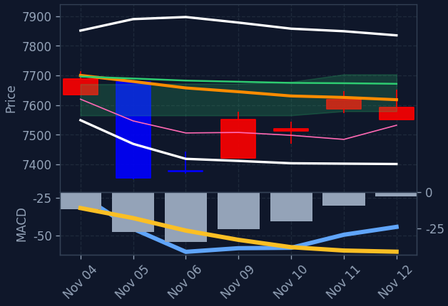
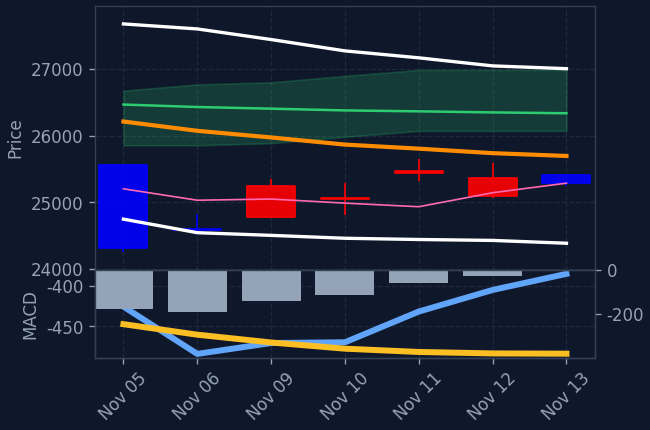
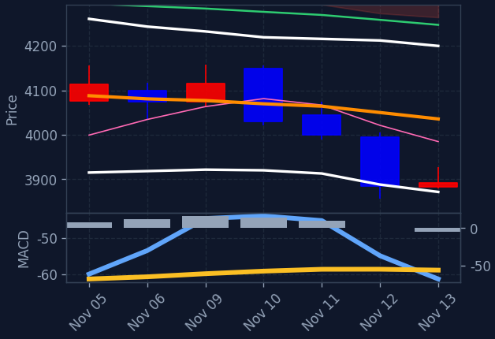

현재 프리장 시장은 S&P500 선물(+0.15%)과 나스닥 선물(+0.07%)이 소폭 상승하며 혼조세 속 조심스러운 강보합 흐름을 보이고 있습니다. 엔비디아(+1.52%)가 안정세를 찾으며 주요 빅테크의 반등을 이끄는 반면, AMD(-2.61%)와 브로드컴(-2.24%)의 약세로 반도체 업종 전반은 하락세를 띠고 있습니다. 방산/우주항공(+0.65%)과 에너지(+0.40%) 등 방어적·가치주 섹터가 상승을 주도하는 모습입니다.
직전 정규장 마감 후 최고경영자 관련 뉴스 등으로 흔들렸던 엔비디아(+1.52%)가 프리장에서 진정세를 보이며 지수 선물의 상방을 지지하고 있습니다. 반면 AMD(-2.61%), 브로드컴(-2.24%) 등 개별 반도체 종목들의 낙폭이 커지면서 반도체 섹터(-0.77%)와 레버리지 상품인 SOXL(-2.55%)은 하락 압력을 받고 있습니다. 마이크로소프트(-0.99%)가 약세를 나타내는 와중에 아마존(+1.14%)과 알파벳(+0.93%)은 반등에 성공하며 빅테크 내 차별화가 진행 중입니다. 이에 자금이 기술주 일변도에서 벗어나 방산, 에너지, 금융 등 타 섹터로 일부 이동하는 흐름이 관찰됩니다.
프리장에서는 방산/우주항공(+0.65%), 에너지(+0.40%), 금융(+0.34%) 섹터가 우상향하며 흐름을 주도하는 반면 반도체(-0.77%), 경기소비재(-0.44%), 기술/IT(-0.22%) 섹터는 하락세를 보이고 있습니다. 스페이스X 스타십 발사 뉴스 및 국경 안보 이슈 등이 방산·우주항공 테마에 긍정적으로 작용하는 반면, 국채 수익률 관련 경계감으로 대형 기술주와 반도체 테마의 상단은 제한되는 양상입니다. 금($3,894, +0.23%)의 소폭 상승과 함께 위험 자산 내 종목 쏠림 현상이 완화되며 방어적 섹터로의 순환매가 관찰됩니다. 한국 증시 관점에서는 엔비디아의 반등과 반도체 섹터 전반의 약세가 혼재되어 있어 국내 반도체주의 개별 장세 대응이 필요하며, 미국 방산 및 에너지 섹터의 온기가 국내 관련 테마에 긍정적인 모멘텀을 제공할 수 있습니다.
🇺🇸미국 야간 (선물·M7·SOXL · 마감 등락 + 프리장/애프터 등락)
📊 나스닥 선물 +0.07%
📊 S&P500 선물 +0.15%
- 알파벳 GOOGL·나스닥 마감 +1.8% · 프리장 +0.9%
- 테슬라 TSLA·나스닥 마감 +1.7% · 프리장 +0.6%
- 아마존 AMZN·나스닥 마감 +0.5% · 프리장 +1.2%
- 마이크로소프트 MSFT·나스닥 마감 +0.4% · 프리장 -1.1%
- 애플 AAPL·나스닥 마감 -0.1% · 프리장 +0.5%
- 메타 META·나스닥 마감 -0.8% · 프리장 -0.1%
- 엔비디아 NVDA·나스닥 마감 -4.3% · 프리장 +1.3%
- 한국 ETF(EWY) EWY 마감 -1.6% · 프리장 -1.1%
- SOXL(반도체 3X) SOXL 마감 -0.8% · 프리장 -2.5%
🚀프리장 급등 TOP5 (ABCD 필터 통과 종목 중)
-
아마존
AMZN·나스닥 · 종가 $267.44 (전일 +0.48%) (프리장 +1.14%)
· 종합소매A/C/D 시그널 ⓘ대세 정배열 + 신고가 (-2.9%, 60선+5%)
-
테슬라
TSLA·나스닥 · 종가 $397.45 (전일 +1.69%) (프리장 +0.53%)
· 자동차A 시그널 ⓘ수렴대 위로 상승전환 (수렴 0.7%) / 120선 위 (+6.3%) · MACD[0선위,상승]
-
애플
AAPL·나스닥 · 종가 $354.88 (전일 -0.21%) (프리장 +0.40%)
· IT하드웨어A/C 시그널 ⓘ대세 정배열 + 신고가 (-1.2%, 60선+6%)
-
존슨앤존슨
JNJ·NYSE · 종가 $283.52 (전일 +1.11%) (프리장 +0.35%)
· 제약A/C/D 시그널 ⓘ추세 반전 (일목구름 위, 5>20, MACD+, 20>60)
-
로켓 컴퍼니스
RKT·NYSE · 종가 $13.71 (전일 -5.06%) (프리장 +0.29%)
· 핀테크B/D 시그널 ⓘ급등 (10일 +25%) / 20일선 위 (+6.6%, 60선기울기 +0.1%) / 단기눌림 (5일선 -5.9%, 5일고점 -10.9%) · 고점대비 -10.9%
🔥강세 섹터 (상승률 상위)
- 방산/우주항공 +0.65%
- 에너지 +0.40%
- 금융 +0.34%
- 헬스케어/바이오 +0.32%
🔻약세 섹터 (하락률 상위)
- 반도체 -0.77%
- 경기소비재 -0.44%
- 기술/IT -0.22%
- 태양광/신재생 -0.08%
🧬관심 테마 대장 (양자·우주·AI 등)
-
로켓 컴퍼니스
RKT·NYSE
B/D ⓘ · 종가 $13.71 (전일 -5.06%) (프리장 +0.29%) 1주일 -7.5%테마: 핀테크 · 시총 52조 342억 · 거래대금 4,579억
💰미국장 거래대금 순위 TOP10 (S&P500)
-
1.
AMD
AMD·나스닥 · 종가 $585.30 (전일 +5.86%)
거래대금 43조 1,783억시총 1,283조 8,086억
-
2.
테슬라
TSLA·나스닥 · 종가 $397.45 (전일 +1.69%)
거래대금 15조 3,749억시총 2,101조 557억
-
3.
애플
AAPL·나스닥 · 종가 $354.88 (전일 -0.21%)
거래대금 15조 910억시총 6,897조 1,105억
-
4.
아마존
AMZN·나스닥 · 종가 $267.44 (전일 +0.48%)
거래대금 12조 3,025억시총 3,867조 5,234억
-
5.
일라이릴리
LLY·NYSE · 종가 $1,427.28 (전일 -0.70%)
거래대금 4조 5,960억시총 1,700조 2,682억
-
6.
버크셔해서웨이
BRKB · 종가 $589.83 (전일 +0.27%)
거래대금 4조 3,671억시총 1,675조 8,779억
-
7.
존슨앤존슨
JNJ·NYSE · 종가 $283.52 (전일 +1.11%)
거래대금 3조 3,386억시총 912조 7,894억
-
8.
코스트코
COST·나스닥 · 종가 $1,092.21 (전일 +0.42%)
거래대금 3조 2,179억시총 647조 2,789억
-
9.
아리스타 네트웍스
ANET·NYSE · 종가 $206.63 (전일 +5.06%)
거래대금 2조 6,966억시총 349조 1,322억
-
10.
텍사스인스트루먼트
TXN·나스닥 · 종가 $312.48 (전일 +0.86%)
거래대금 2조 5,791억시총 381조 8,687억
🏆미국 추천 Top 3
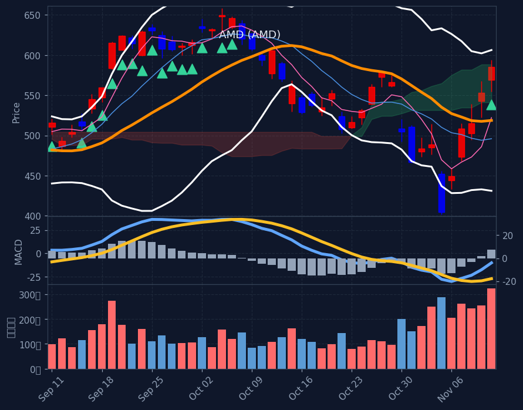
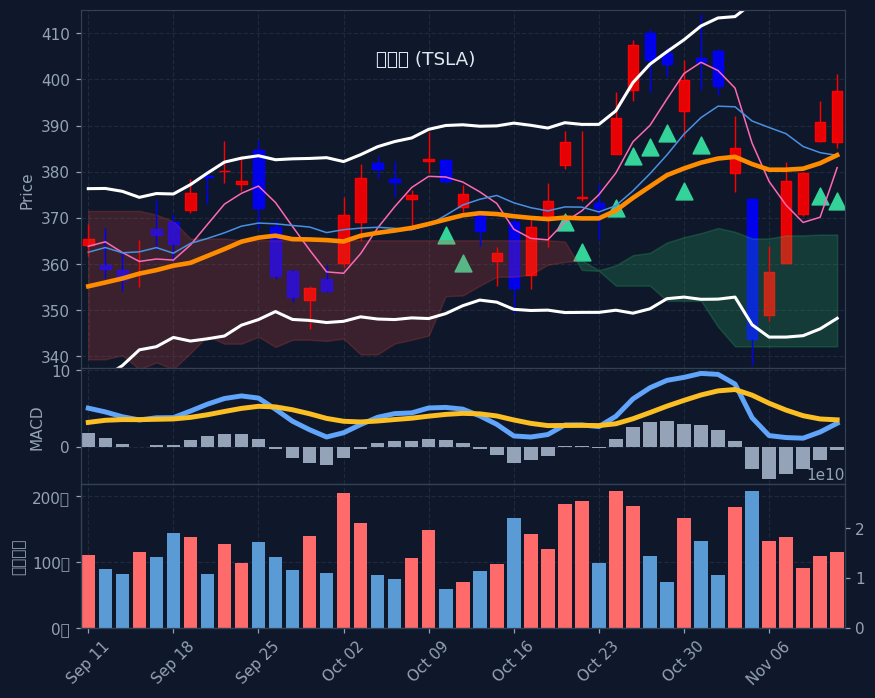
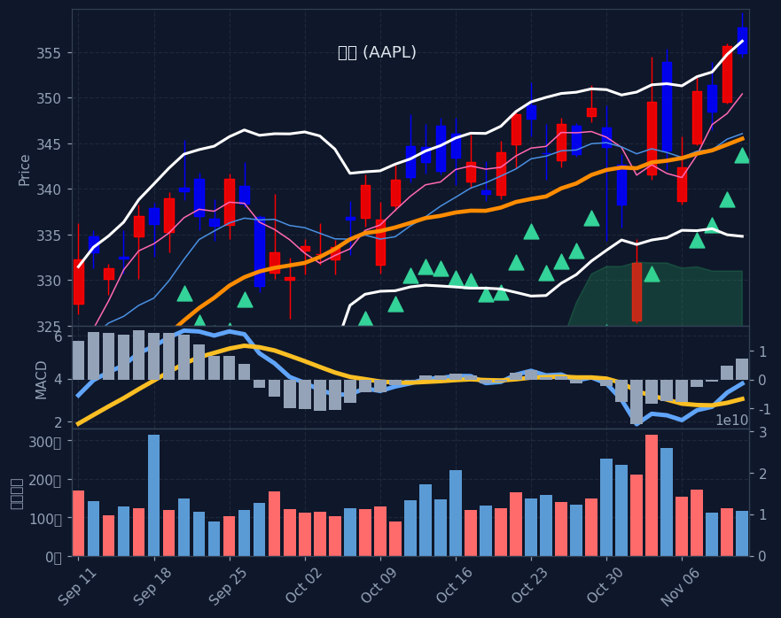
🇺🇸미국 종목 스크리닝 (전략별 칸 · A/B/C/D)
📊 A 수렴 후 상승 (3)
-
AMD
AMD·나스닥 · 종가 $585.30 (전일 +5.86%) (프리장 -2.61%)
A 시그널 ⓘ 20일선 +12.8%시총 1,283조 8,086억 · 거래대금 43조 1,783억테마: 반도체🇰🇷 한국인 순매수 최근5일 +538억수렴대 위로 상승전환 (수렴 5.1%) / 120선 위 (+11.6%) · MACD[GC,상승]
-
테슬라
TSLA·나스닥 · 종가 $397.45 (전일 +1.69%) (프리장 +0.53%)
A 시그널 ⓘ 20일선 +3.6%시총 2,101조 557억 · 거래대금 15조 3,749억테마: 자동차🔻 한국인 순매도 최근5일 1,885억(자금유출)수렴대 위로 상승전환 (수렴 0.7%) / 120선 위 (+6.3%) · MACD[0선위,상승]
-
애플
AAPL·나스닥 · 종가 $354.88 (전일 -0.21%) (프리장 +0.40%)
A/C 시그널 ⓘ 20일선 +2.7%시총 6,897조 1,105억 · 거래대금 15조 910억테마: IT하드웨어🔻 한국인 순매도 최근5일 108억(자금유출)수렴대 위로 상승전환 (수렴 1.4%) / 120선 위 (+10.2%) · MACD[GC,0선위,상승]
🔄 B 20일선 눌림목 (3)
-
애플로빈
APP·나스닥 · 종가 $393.68 (전일 -2.74%) (프리장 -0.42%)
B/D 시그널 ⓘ 20일선 +32.0%시총 174조 4,410억 · 거래대금 1조 6,120억테마: 광고급등 (10일 +84%) / 20일선 위 (+32.0%, 60선기울기 +0.7%) / 단기눌림 (5일선 -1.3%, 5일고점 -4.8%) · 고점대비 -4.8%
-
모더나
MRNA·나스닥 · 종가 $231.35 (전일 -6.97%) (프리장 -1.02%)
B 시그널 ⓘ 20일선 +0.5%시총 125조 1,909억 · 거래대금 2조 1,550억테마: 바이오급등 (10일 +29%) / 20일선 위 (+0.5%, 60선기울기 +17.4%) / 단기눌림 (5일선 -7.8%, 5일고점 -17.6%) · 고점대비 -17.6%
-
파이서브
FISV·나스닥 · 종가 $61.50 (전일 -3.76%) (프리장 +0.00%)
B 시그널 ⓘ 20일선 +13.4%시총 43조 7,603억 · 거래대금 7,308억테마: 결제급등 (10일 +33%) / 20일선 위 (+13.4%, 60선기울기 +2.4%) / 단기눌림 (5일선 -2.4%, 5일고점 -4.3%) · 고점대비 -4.3%
📈 C 추세추종 (3)
-
애플
AAPL·나스닥 · 종가 $354.88 (전일 -0.21%) (프리장 +0.40%)
A/C 시그널 ⓘ 20일선 +2.7%시총 6,897조 1,105억 · 거래대금 15조 910억테마: IT하드웨어🔻 한국인 순매도 최근5일 108억(자금유출)대세 정배열 + 신고가 (-1.2%, 60선+6%)
-
아마존
AMZN·나스닥 · 종가 $267.44 (전일 +0.48%) (프리장 +1.14%)
A/C/D 시그널 ⓘ 20일선 +4.3%시총 3,867조 5,234억 · 거래대금 12조 3,025억테마: 종합소매🔻 한국인 순매도 최근5일 553억(자금유출)대세 정배열 + 신고가 (-2.9%, 60선+5%)
-
일라이릴리
LLY·NYSE · 종가 $1,427.28 (전일 -0.70%) (프리장 -0.03%)
C 시그널 ⓘ 20일선 +6.0% ⚠️끝물ⓘ시총 1,700조 2,682억 · 거래대금 4조 5,960억테마: 제약대세 정배열 + 신고가 (-2.2%, 60선+16%) · ⚠️끝물주의(RSI다이버전스(77→68))
🔃 D 추세 반전 (3)
-
아마존
AMZN·나스닥 · 종가 $267.44 (전일 +0.48%) (프리장 +1.14%)
A/C/D 시그널 ⓘ 20일선 +4.3%시총 3,867조 5,234억 · 거래대금 12조 3,025억테마: 종합소매🔻 한국인 순매도 최근5일 553억(자금유출)추세 반전 (일목구름 위, 5>20, MACD+, 20>60)
-
존슨앤존슨
JNJ·NYSE · 종가 $283.52 (전일 +1.11%) (프리장 +0.35%)
A/C/D 시그널 ⓘ 20일선 +5.0%시총 912조 7,894억 · 거래대금 3조 3,386억테마: 제약추세 반전 (일목구름 위, 5>20, MACD+, 20>60)
-
아리스타 네트웍스
ANET·NYSE · 종가 $206.63 (전일 +5.06%) (프리장 -1.07%)
A/D 시그널 ⓘ 20일선 +15.1%시총 349조 1,322억 · 거래대금 2조 6,966억테마: 통신장비추세 반전 (일목구름 위, 5>20, MACD+, 20<60(초입))
※ S&P500 대상 A/B/C/D 전략별 분류(각 칸 거래대금순). 한 종목이 여러 전략에 잡히면 각 칸에 중복 표기. 백테스트상 기계적 엣지는 약하며 매수 추천이 아닙니다. 판단·책임은 본인.
🇰🇷한국인 자금흐름 (서학개미 · 최근 5거래일 순매수/순매도, 억원)
📅 결제일 11/6~11/12(5거래일) 기준 · 오늘 11/13 기준 약 1일 전 데이터 · T+2 결제 기준(실제 매매는 약 2거래일 전)
💸 한국인 순매수 일평균: +5,060억 (전주 +7,560억 대비 -33.1%) · 5일 총액 +25,300억
💰 순매수 TOP5 — 개별종목 (11/6~11/12 결제 기준)
- 엔비디아 NVDA·나스닥 +1,063억시총 5,366조 5,315억 · 거래대금 165조 806억
- 특정 티커 불명 X +923억
- AMD AMD·나스닥 +538억시총 1,283조 7,223억 · 거래대금 43조 1,754억
- 알파벳(구글) GOOGL·나스닥 +436억시총 4,910조 8,205억 · 거래대금 14조 1,190억
- 블룸 에너지 BLDP·나스닥 +351억시총 6,573억 · 거래대금 38억
📦 순매수 TOP5 — ETF (11/6~11/12 결제 기준)
- 디렉션 데일리 세미컨덕터 불 3X ETF SOXL +7,798억거래대금 15조 4,465억
- 프로셰어즈 울트라프로 QQQ ETF TQQQ +3,312억거래대금 5조 2,455억
- 나스닥100 2X(QLD) QLD +2,234억거래대금 5,126억
- S&P500 ETF(VOO) VOO +1,078억거래대금 5조 7,351억
- 나스닥100 ETF(QQQM) QQQM +1,026억거래대금 1조 4,069억
🔻 순매도 TOP3 — 자금 유출 (11/6~11/12 결제 기준)
- 테슬라 TSLA·나스닥 −1,885억시총 2,100조 9,143억 · 거래대금 15조 3,739억
- 아틀라시안 TEAM·나스닥 −939억시총 51조 5,532억 · 거래대금 4,509억
- 클라우드플레어 NET·NYSE −859억시총 152조 6,489억 · 거래대금 1조 4,740억
※ 예탁결제원(SEIBro) 최근 5거래일 한국인 순매수/순매도 결제금액(T+2) · 11/6~11/12 결제 기준(실제 매매는 약 2거래일 전). 자금이 어디로 유입·유출되는지 참고용.
🩹E 투매 바닥 반등 (투매 capitulation + 반등 · 🔥=지수 동반 바닥)
현재 E(투매 바닥) 신호 없음 — 시장이 바닥권(지수 RSI·공포탐욕 극단)이 아닐 땐 비어있는 게 정상입니다.
※ 투매 바닥(RSI≤30+50선이격+거래량폭증)에서 반등 시작 포착, 4시간봉 RSI도 과매도. 🔥는 지수(나스닥/S&P·코스피)도 RSI<35 동반 바닥(강신호). 떨어지는 칼날 위험 — 매수 추천 아님, 판단·책임 본인.
🚀급등 초입 (20일 신고가 돌파·거래량 급증)
-
인튜이티브 머신스
LUNR·나스닥 · $13.03
+6.98%
급등초입 (20일돌파·거래량3.5배·당일+7.0%·20선+19%)
※ 급등 초입(추세확인보다 빠른 돌파 진입) 참고용. 백테스트 표본 적고 상승장 기준 — 가짜 신호·되돌림 위험, 매수 추천 아님.
📐F. 60일선 지지 (60일선까지 눌렸다 지지 마감 · 참고용)
-
엑슨모빌
XOM·NYSE · $169.78
+1.84%
60일선 지지 (저가 -0.4%·종가 +1.1%·꼬리지지 68%)
-
코노코필립스
COP·NYSE · $140.06
+1.60%
60일선 지지 (저가 +0.7%·종가 +2.6%·꼬리지지 76%)
-
셰브론
CVX·NYSE · $216.35
+1.44%
60일선 지지 (저가 +0.3%·종가 +1.3%·꼬리지지 56%)
-
씨에프 인더스트리스
CF·NYSE · $124.92
+1.36%
60일선 지지 (저가 -1.3%·종가 +1.6%·꼬리지지 72%)
-
케이던스
CDNS·나스닥 · $333.32
+1.23%
60일선 지지 (저가 +0.9%·종가 +3.7%·꼬리지지 88%)
-
실리콘 래보라토리스
SLAB·나스닥 · $222.12
+0.23%
60일선 지지 (저가 +0.1%·종가 +0.6%·꼬리지지 90%)
-
솔벤텀
SOLV·NYSE · $88.81
+0.21%
60일선 지지 (저가 -0.7%·종가 +0.8%·꼬리지지 62%)
-
바이오-테크네
TECH·나스닥 · $72.84
+0.05%
60일선 지지 (저가 +0.4%·종가 +0.5%·꼬리지지 67%)
-
템퍼스 AI
TEM·나스닥 · $75.89
-4.46%
60일선 지지 (저가 -0.1%·종가 +5.9%·꼬리지지 70%)
※ 60일선까지 눌렸다 지지받고 마감한 종목(참고 태그). 백테스트상 다음날 반등 엣지 없음(승률 48~49%·생존편향 포함) 확인됨 — 매수 추천·시그널 아님, 종합점수/Top3에도 미반영. 단순 참고용.
🧬삼각수렴 임박 (변동성 수축·돌파 직전 코일 · 참고용)
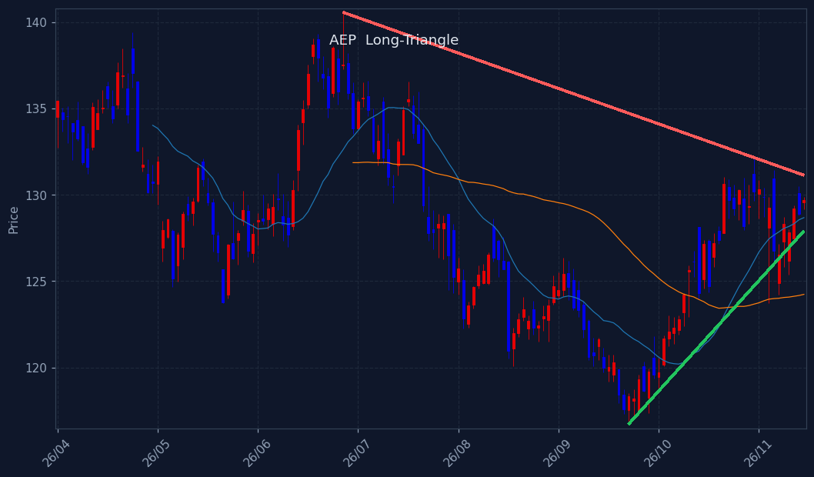
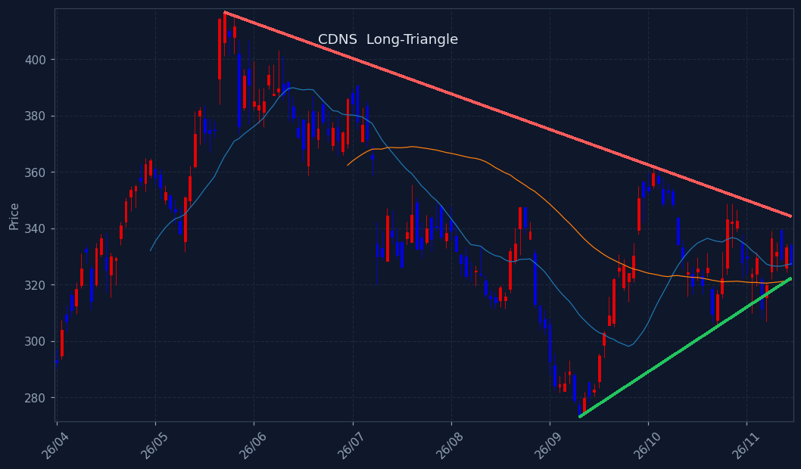
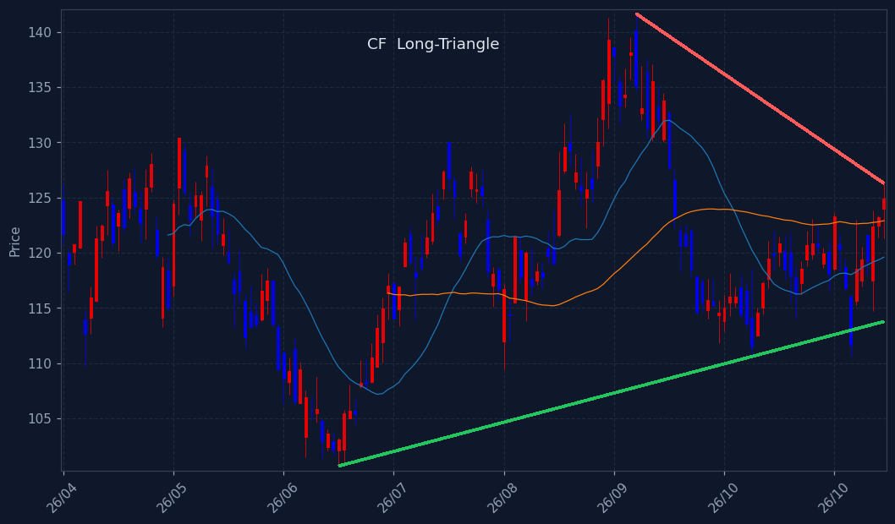
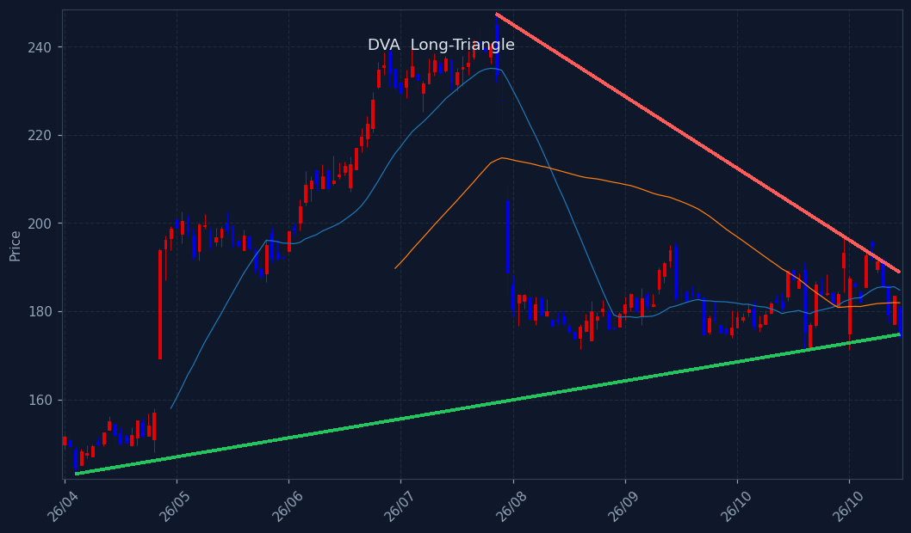
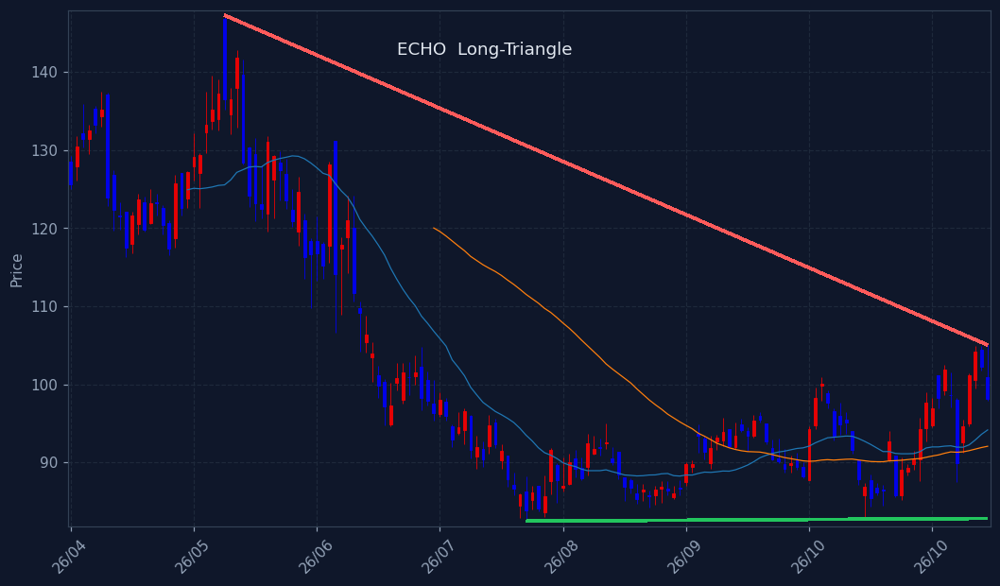
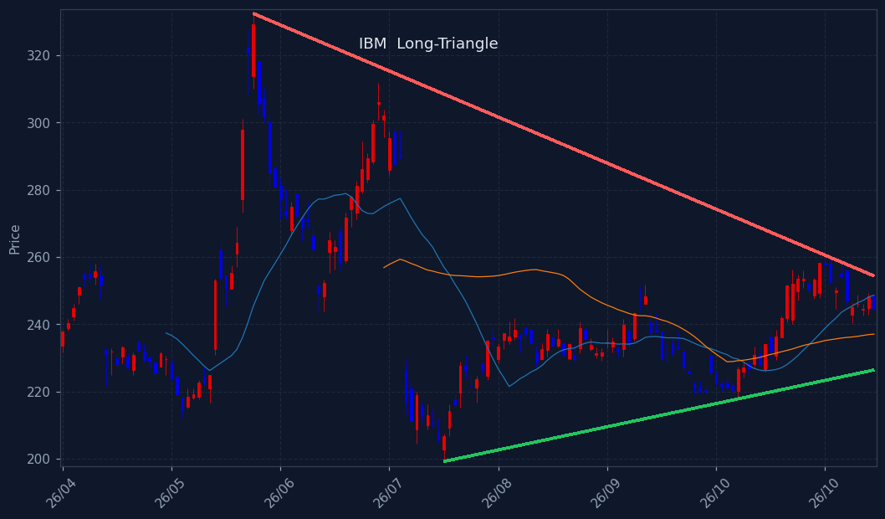
※ 삼각수렴 돌파 임박 종목. 📐장기 삼각수렴(수개월 대형 삼각형, 볼록껍질 추세선+실수축) = 백테스트 491건 승률 66%·평균 +8.7%/20일로 엣지 확인(HOOD·TSLA류 대박 초입). 단기 코일 = 엣지 약함(승률 ~60% 베타 수준). 🔻대칭=고점↓·저점↑ / 🟰바닥지지=저점 평평. 매수추천 아님·종합점수/Top3 미반영(관찰용).